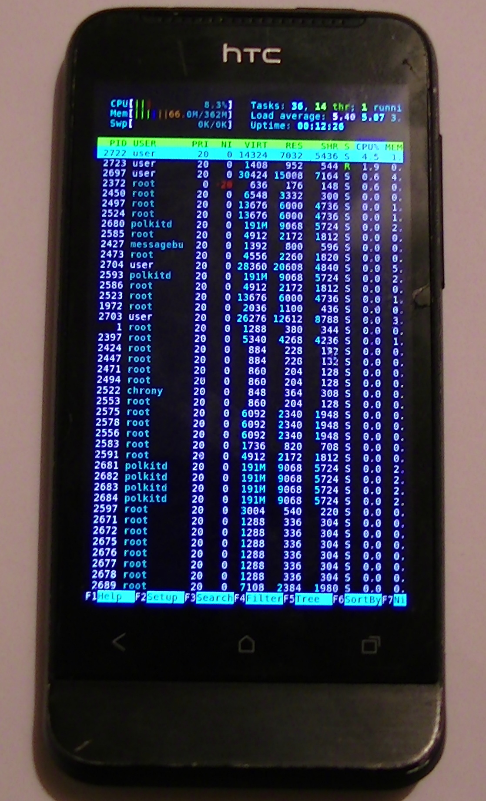

HTC One V (htc-primou)
|
 HTC One V running htop in weston-terminal | |
| Manufacturer | HTC |
|---|---|
| Name | One V |
| Codename | htc-primou |
| Released | 2012 |
| Category | testing |
| Original software | Android 4.0.3 |
| postmarketOS kernel | 3.0.101 |
| Hardware | |
| Chipset | Qualcomm Snapdragon S2 (MSM8255) |
| CPU | 1.0 GHz Scorpion |
| GPU | Adreno 205 |
| Display | 480x800 |
| Storage | 4 GB |
| Memory | 512 MB |
| Architecture | armv7 |
| Unixbench Whet/Dhry score | 186.6 |
{kind=link}
| USB Networking | |
|---|---|
| Flashing | |
| Touchscreen |
Works
|
| Display |
Works
|
| WiFi | |
| FDE | |
| Mainline | |
| Battery | |
| 3D Acceleration | |
| Audio | |
| Bluetooth | |
| Camera | |
| GPS | |
| Mobile data | |
| SMS | |
| Calls | |
| USB OTG |
Unavailable
|
| NFC | |
| Accelerometer | |
|---|---|
| Magnetometer | |
| Ambient Light | |
| Proximity | |
| Hall Effect | |
| Barometer | |
| Power Sensor | |
| Camera Flash | |
|---|---|
| Keyboard | |
| Touchpad | |
| USB-A | |
| HDMI/DP | |
| Ir TX | |
| Ir RX | |
| Stylus | |
| Haptics | |
| Ethernet | |
| FOSS bootloader | |
Contributors
Maintainer(s)
Users owning this device
- HenriDellal
- Misopog (Notes: Stock, little beat up but still working)
- Newbyte
- XRayMan (Notes: Broken screen but touch working)
How to enter flash mode
Hold Volume Down and Power, then choose Fastboot with Power button.
Installation
- Unlock bootloader on htcdev.com, if you didn't yet.
- Install rootfs on sdcard, since the phone has small partitions.
pmbootstrap install --sdcard /dev/your_card
- Move your phone into flash mode
- Flashing kernel to boot partition is not tested. It's possible to use pmbootstrap flasher boot to boot kernel.
Features
USB networking and ssh: Doesn't work for me. The phone doesn't show up on list of connected devices. It may be either downstream kernel or hardware issue, since the only way to get the phone detected is to move it in fastboot mode.
Wi-Fi: Shows up as wlan0 interface. It's known to work on other HTC devices without much effort, but I didn't figure out how to enable it yet.
Battery: Charging works when the phone is enabled, current state is detected properly. Charging-sdl most likely to not work, because this phone uses recovery for charging when plugged and turned off.
Audio: msm-audio device gets detected, but it's not possible to unmute device volume channel for unknown reason. Probably needs configuration files for ALSA.
Camera: tested with motion, doesn't work.
Hardware
- Battery charger: tps65200
- USB: ci13xxx (ci-hdrc-usb2)
- Touchscreen: Synaptics 3200
- Light sensor: Capella CM3629
- Audio subsystem: Texas Instruments TPA2051D3
- Camera: Samsung s5k4e5yx
- LED flash: tps61310
- Button LEDs: pm8058 (mainline)
- Wi-Fi: Broadcom BCM4329
- Accelerometer: BMA250_no_ecmps
Other information
- Plasma Mobile only loads to a black screen with the software rendering workaround. Without it, it does not start at all.